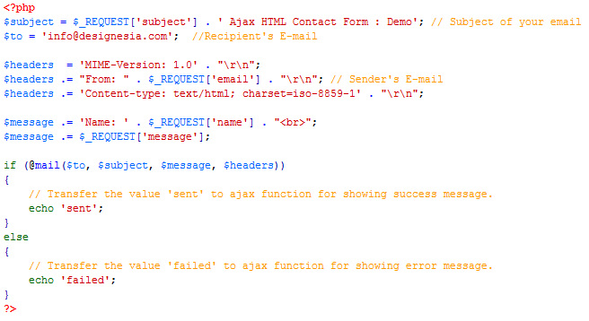

Archi HTML Template
By: designesia
Thank you for purchasing my theme. If you have any questions that are beyond the scope of this help file, please feel free to ask via item's comments. Also please don't forget to give rating! Thanks so much! :)
This template using Bootstrap framework. Main content is placed between header and footer area. The content is nested within <div id="content">.
... header area ...
<div id="content">
<div class="container">
<div class="row">
<div class="col-md-4">
this is your content
</div>
<div class="col-md-8">
this is your content
</div>
</div>
</div>
<section>
<div class="container">
<div class="row">
this is your content
</div>
</div>
</section>
</div>
... footer area ...
<div class="row">
<div class="col-md-6"> this is 1/2 columns </div>
<div class="col-md-6"> this is 1/2 columns </div>
</div> <div class="row">
<div class="col-md-4"> this is 1/3 columns </div>
<div class="col-md-8"> this is 2/3 columns </div>
</div> <div class="row">
<div class="col-md-3"> this is 1/4 columns </div>
<div class="col-md-9"> this is 3/4 columns </div>
</div>
Open file js/designesia.js then change de_color_style value.
You can change color scheme by open file css/color.css. Select color that you want from list of css files. Also you can create your own color scheme by change it directly on css files in folder css/color.
Open file js/designesia.js then change de_header_style value.
Open file js/designesia.js then change de_header_layout value.
Open file js/designesia.js then change value for de_header_sticky (for desktop) and de_header_mobile_sticky (for mobile).
Open file js/designesia.js then change de_header_color value.
Open file js/designesia.js then change de_menu_separator value.
Open file js/designesia.js then change de_font_style value.
All section/subheader background on this template can be edited within file css/bg.css
To make custom background color without touching css file, you can use code data-bgcolor="#hex-color" within your div/section tag. See sample below:
<div data-bgcolor="#333333">
my div content...
</div>
To make custom background image without touching css file, you can use code data-bgimage="url(your-image-url)" within your div/section tag. See sample below:
<div data-bgimage="url(images/background/bg-1.jpg)">
my div content...
</div>
Select an object that you want to animate. As example you want create animate for H1 element. You can see below:
<h1 class="wow fadeIn" data-wow-delay=".2s">Animate Text</h1>
<section id="my-section">...content here...</section>
<section id="my-section" data-speed="10">...content here...</section>
<section id="my-section" data-speed="10" data-type="background">...content here...</section>
#my-section{
background-image:my-bg-image.jpg;
}
You can generate latitude and longitude value here: http://www.latlong.net/
<div class="grid" data-col="3" data-gridspace="30" data-ratio="466/700"><div class="grid-sizer"></div>
<div class="grid-item large-width"> </div> </div>
data-col: to set how many columns on gallery
data-gridspace: to set space between gallery item
data-ratio: to set image ratio (height/width)
For class name below are applied for gallery item (grid-item).
large: gallery item will have double size
large-width: gallery item will have double size of width
large-height:gallery item will have double size of height
Open > email.php. Change $to value with your email. For contact form require to use email provided by your domain (email@your-domain.com). Also your server must support php mail. You can ask your hosting provider to activate php mail if it not activated.

Once again, thank you so much for purchasing this theme. As I said at the beginning, I'd be glad to help you if you have any questions relating to this theme. No guarantees, but I'll do my best to assist. If you have a more general question relating to the themes on ThemeForest, you might consider visiting the forums and asking your question in the "Item Discussion" section.
designesia